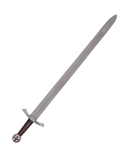
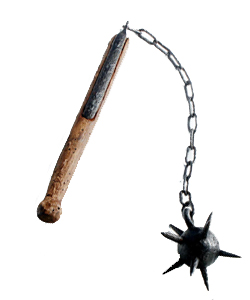
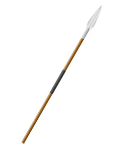
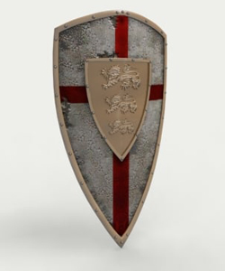
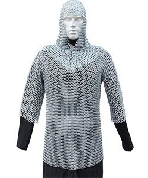
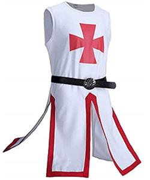

El peligro es constante y los enemigos son muchos, la preparacion es parte imprescindible del valor. ¡Equipate antes de partir a la cruzada!

Espada: del tamaño justo y el peso idoneo. El arma perfecta para cualquier guerreo. ¡No salgas de casa sin ella!

Mangual: se requiere fuerza y precision para blandir un mangual. Dominar la tecnica es dificil, pero los resultados son devastadores...para el enemigo

Lanza: mantener a raya a los enemigos al mismo tiempo que los ataques nunca debe despreciarse, un arma ideal para un cruzado precavido

Escudo: los cruzados mas devotos, abnegados y aguerridos pueden marchar con orgullo blandiendo armas en cada mano. Para el resto de los sensatos, existen los escudos

Cota de Malla: ofrece una vasta proteccion al mismo tiempo que es ligera y maniobrable, ideal para todo tipo de guerreros

Tabardo de la Orden: ¡no se puede representar a la Orden sin el tabardo de la Orden!.